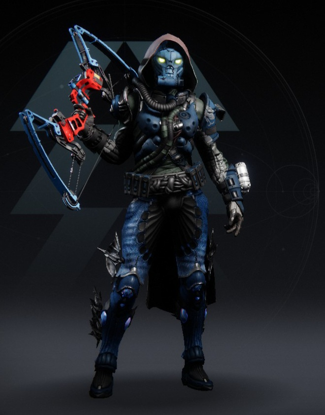

1. 활 프레임은 정밀 / 경량 2가지
정밀이 느리지만 강하고 경량이 빠르고 약함
2. 기본적으로 발속스탯을 최대한 까는 부품조합이 선호되는 편임
2-1. 경량의 경우 최소 기본발속이 540이므로 이를 달성하려면
고분자 활시위+발속걸작 / 유동적 활시위+발속걸작 / 고탄성 활시위
셋 중 하나가 되어야 함.
최소발속 밑으로는 궁움퍽 제외하면 뭘해도 안내려감.
고탄성은 하나만으로 이미 540이 되기 때문에 고탄성에 발속걸작이 붙는다면 걸작 스탯이 의미가 없어짐 그래서 존나꼬와짐
2-2. 정밀은 고탄성 발속걸작이어야 최소스탯 576됨
3. 궁수의 움직임 퍽은 정밀 타격시(약점 공격시) 발속을 일정시간동안 440으로 고정시켜줌
그래서 정밀 활이 비교적 경량 활보다 궁움 덕을 더 많이 보는 편임
한편으론 2번 조합이 굳이 아니어도 맞추기만 하면 발속 고정이니 활용도가 높음
4. 장속은 활 다시 매기는 속도가 빨라짐
유의미하다는 실험 꽤나 있었고 경량에는 궁움보다 낫다는 의견도 있더라.
5. 퍽롤에대한얘기들
- 비소의 이빨은 광란+폭발형화살촉이나 잠자리+폭발용화살촉이 되어서 쌍딜퍽이 이론상 가능
- 축적된 구원과 숫사슴의 예봉은 현재 유이한 정밀 전설 활임
아님 따가운 바람도 정밀임 내가 병신이었음 ㅈㅅ
- 황실 바늘은 충격 증폭기가 3퍽에 달리기 때문에 활용가능성이 있음
- 속삭이는 석판은 치무가 달림
- 따가운 바람은 퍽롤에 궁움이 없음. 그래서 576 최소발속이 유난히 절실한 편이고 3퍽에는 과잉이나 살육의 바람 혹은 신속발사를 고려하는 편임.
- 물리는 심심찮게 드랍되는 속삭이는석판/파밍이 그나마 가능한 따가운 바람/구정 1넴 보상으로 나올수도 있는 축적된 구원 3종
- 아크는 숫사슴의 예봉 / 비소의 이빨
- 보이드는 선받자시즌 활인 황실 바늘
- 솔라는 마소 드랍 천국의 독재자뿐이다 좆 됐 다!